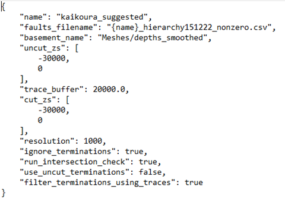

Leapfrog 3D mesh generation and fault cutting
Import inputs
Right click on GIS Data, Maps and Photos – New Subfolder + create a subfolder with your project name, then subfolders of this named
traces,footprints,contours.Import the contours, footprints and traces into these folders by right clicking on the folder – import vector data
Import the grid to use as the depth cut off for faulting by right clicking on Meshes – import elevation grid
Run fault modelling
File -> Fault System Modelling -> Rebuild Fault System. This will ask you to select a json file (easiest to keep this in the folder where the project is) “name” needs to be the name of your first subfolder, “faults_filename” is the file with the fault hierarchy in it, “basement_name” is the location (in the leapfrog project) of the base mesh, “uncut_zs” is the depth range to make the initial uncut faults in, “trace buffer” … , “cut_zs” is the depth range to cut the fault surfaces to (in practice this will be the depth to the depth mesh but could use this if wanted a uniform surface), “resolution” is the resolution of fault interactions/terminations in m (based on some issues I’ve been having, might want to set this a bit smaller e.g. 100m), “ignore_terminations”, “run_intersection_check” runs a check on whether the faults intersect once they’ve been cut which is slightly less important now that we’re making buffers around the areas where faults intersect, “use_uncut_terminations” can be used to truncate faults against the uncut version of their meshes rather than the cut version (which you generally won’t want), “filter_terminations_using_traces” stops faults on opposite sides of an earlier fault from generating termination lines on each other.

File -> Fault System Modelling -> Create termination models(seems to fail on some faults, but work if go to Projects – retry failed task after running)File – Fault System Modelling – add termination boundaries
File – Fault System Modelling – Extract main fault parts. The final fault network will be in a folder called Meshes/{name}/extracted
Save the extracted meshes by right clicking on this folder – Export Meshes – Select All, Format: *.obj and choose the folder you want to save to
In practice you’ll want to check that this process gave you the faults you were actually expecting and that they’ve been cut/truncated properly so…
Quality Control
Import traces into leapfrog scene (drag + drop the traces folder) - I’ve found it helpful to go through the extracted meshes and make sure they correspond to the surface traces + don’t have intersections with other faults. The most common problems are that the trace of another fault doesn’t quite truncate a fault so that the fault goes beyond its surface trace – might be solved by changing “resolution” to be smaller (see above), that a fault intersection doesn’t get picked up or that a fault doesn’t fully cut through another so you end up with a long slot in the fault rather than a truncation.
To check for fault intersections in the final model:
rename Meshes/{name}/output to something else e.g. Meshes/{name}/output1
rename Meshes/{name}/extracted to Meshes/{name}/output
run File – Fault System Modelling – check Fault Mesh intersections
Change back the folder names (just so you don’t forget later) - this is a bit of a hack but Check Fault Mesh Intersections works on the folder “output”
If there are intersections which need adding in as terminations, there are two possibilities:
The fault which needs truncating already has a termination listed in the terminations folder:
Go to the geological model for this fault – boundary – add lateral extent – from distance function – create new distance function – choose the intersection line as the object for this distance function – buffer – set to 100m.
rerun “add termination boundaries” and “extract main fault parts” – might have to right click on the new termination in the GM – switch inside
The fault which needs truncating doesn’t have a termination:
a. Copy the intersection line to the “terminations” folder
b. Rename to the name of the fault being terminated
c. rerun “add termination boundaries” and “extract main fault parts” (I can’t remember if you need to redo the GM section from the first case)
If a termination line needs editing (e.g. to bring it to the edge of a fault):
Right click on the termination line – edit
Select snap to mesh vertex
Select 3D (in panel above scene)
Click on the last vertex in the line + hold down ctrl as you move it where you want it to be. Alternatively click “draw new line” in the line above and draw a new polyline as a termination boundary.
rerun “add termination boundaries” and “extract main fault parts”